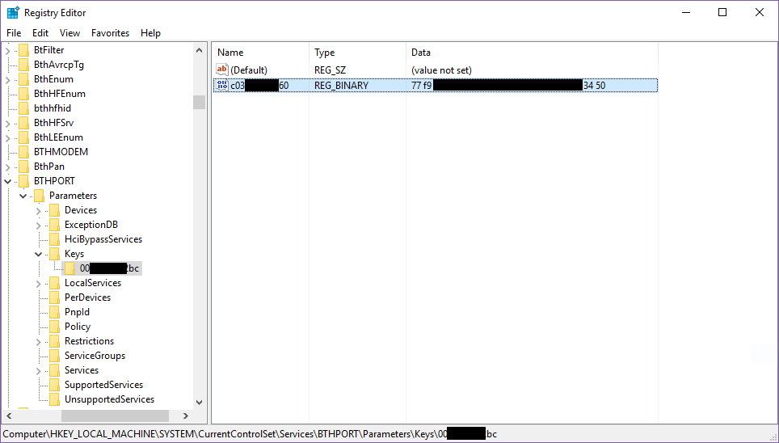

解决Windows与Ubuntu双系统需要反复重新配对蓝牙鼠标的问题
废话几句
post模板在8/21创建，现在终于（逼自己）回来填坑了Orz
之前买了个蓝牙鼠标，但是我装了Windows 10+Ubuntu 16.04的双系统，每一次切换系统都需要重新配对，麻烦至极，于是谷歌了一番，找到了一点解决方案。
首先给出我的不负责任猜想：蓝牙鼠标有一个MAC地址MB，计算机有一个MAC地址MP（蓝牙适配器的），每一次配对的时候，鼠标或者计算机随机（也许也是其他算法）产生一个key记为K，然后将它发送给对方。配对成功之后，双方应该都会保存这个key。下一次配对的时候，只要双方的MAC、key三者一致，就能重新配对。
基于上面的想法，由于MAC在两个系统里面都是一样的，所以只要依次在两个系统里配对，然后将后配对的系统保存的key覆盖到先配对的系统保存的key，就可以实现两个系统均能配对。
考虑到Linux相对来说比较自由，有了root什么都能干，于是基本的想法就是先在Ubuntu中配对，再在Windows中配对，然后从Windows中读取key。
获取Windows中保存的蓝牙密钥
Windows将密钥保存在了注册表中，而即时使用系统管理员打开，也无法查看，因此需要使用特殊的工具PsExec，放心，这是微软官方提供的工具。
到这里下载：，然后解压，里面有一个PsExec.exe程序。
接下来，在开始按钮点击右键，选择“命令控制台（管理员）”，然后进入到PsExec.exe所在目录，输入：
1 | |
此时会打开一个注册表窗口，导航到HKEY_LOCAL_MACHINE\SYSTEM\CurrentControlSet\Services\BTHPORT\Parameters\Keys，然后你就会看到你的PC的蓝牙适配器MAC：

如上图，00********bc就是我的蓝牙适配器MAC，而我的蓝牙鼠标的MAC则是c03*******60，后面的就是密钥！复制出来备用。
修改Ubuntu中的密钥
接下来，我们回到Ubuntu，通过以下命令更改密钥：
1 | |
在info文件中，可以看到[LinkKey]字段，其中的Key键保存的正是密钥，我们把它修改为Windows下的密钥，如果不放心可以先把这个文件备份。
1 | |
保存文件，重启，大功告成！
Bonus - Ubuntu让蓝牙鼠标配对的时候关闭触摸板
这个功能Windows 10已经自带，而我非常不习惯触摸板，用久了手指疼- -于是再谷歌了一番。大概方法是添加一条udev规则，让鼠标是否插入的变动会触发一个脚本。
我们首先需要获取触摸板的设备ID，由于不同的系统对触摸板的命名不同，所以没有办法写通用脚本。打开终端输入：
1 | |
然后我们从中找到带有Touchpad字样的设备，记下它的ID：
1 | |
然后准备一个脚本touchpad_switcher.sh：
1 | |
注意，<touchpad_id>需要替换为你获取到的ID。别忘了提供可执行权限：
1 | |
接下来，创建文件/etc/udev/rules.d/10-local.rules，输入：
1 | |
注意$USER替换成你的用户名，对应的脚本路径要修改。
重启电脑，大功告成！
参考链接
本博客所有文章除特别声明外，均采用 CC BY-SA 4.0 协议 ，转载请注明出处！